Sélectionnées pour leur beauté, leur équilibre morphologique et leur profil génétique vérifié, nos juments reproductrices sont le cœur vivant de l'Arche du Négadis.
Au même titre que l'étalon, la jument est co-responsable de 50 % de la qualité de la descendance. Notre sélection maternelle est guidée par les mêmes exigences : conformation, tempérament, santé génétique.
Évaluation de l'impression générale, de la symétrie et de la qualité des membres — critères prioritaires du jugement AMHA.
L'AMHR décrit le cheval miniature comme "eager and friendly" — une qualité que nous cultivons avec soin dans notre sélection maternelle.
Test ACAN obligatoire, test de robe, vérification du pedigree sur minimum 3 générations. Aucun compromis sur la santé génétique.
Élégance, finesse et lignée de champion. Découvrez la future étoile de l'élevage de l'Arche du Négadis.
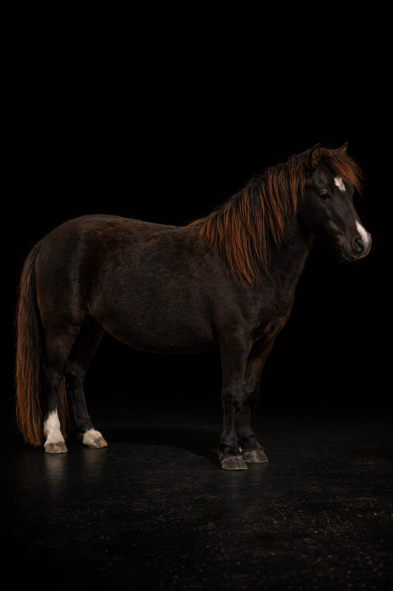
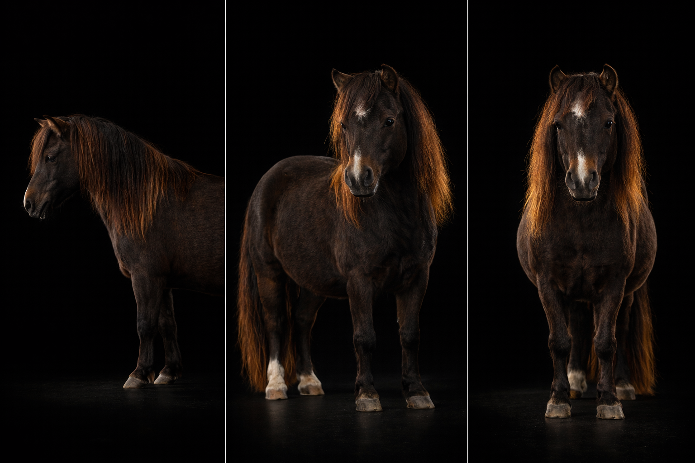
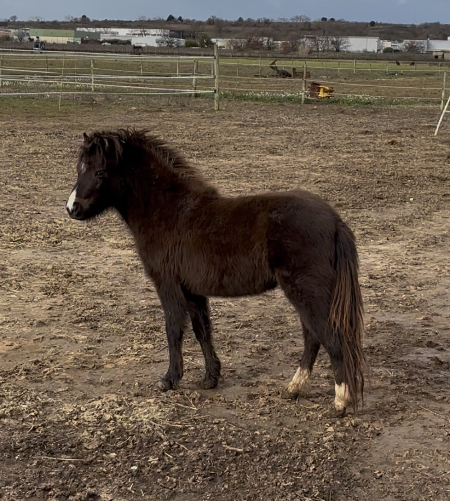
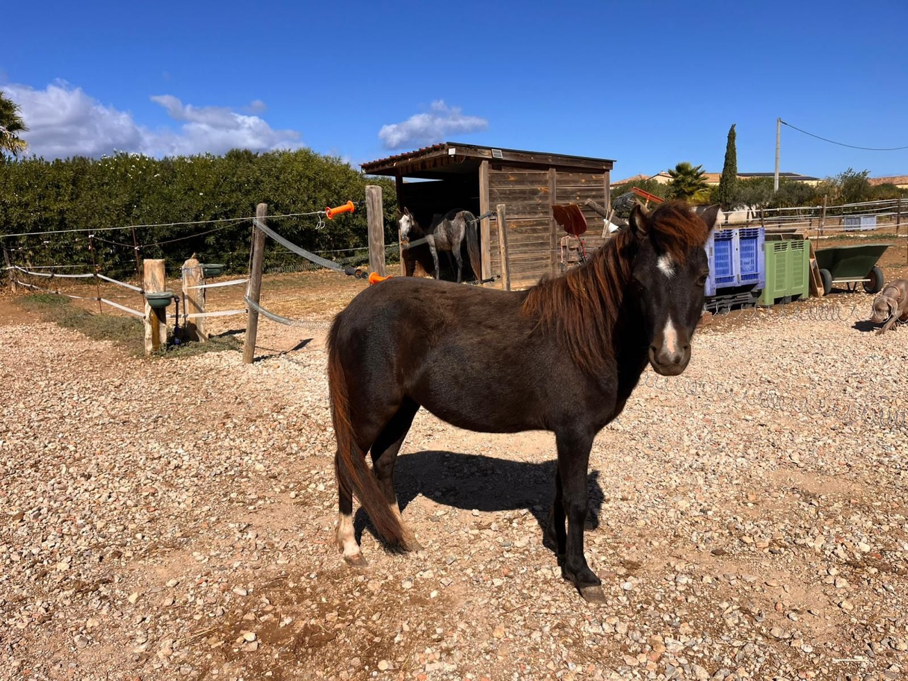
Jument reproductrice · L'Arche du Négadis
Ninadja est l'incarnation même du raffinement chez le Miniature Horse Américain. Avec sa robe noire profonde soulignée d'un délicat liseré blanc sur le museau, elle affiche une distinction naturelle qui ne laisse personne indifférent.
Fille de lignées prestigieuses remontant au légendaire Boones Little Buckeroo, elle porte en elle l'héritage des plus grands champions de show américains, tout en conservant une harmonie morphologique parfaite.
À l'Arche du Négadis, nous sélectionnons nos juments autant pour leur beauté que pour leur mental. Ninadja en est le meilleur exemple :
En tant que future reproductrice, Ninadja est une pièce maîtresse de notre programme d'élevage. Son rôle est de fixer les standards de la race :
La valeur d'une jument reproductrice ne se mesure pas seulement à sa robe ou à ses mensurations, mais à la qualité qu'elle transmet à chaque génération.
— L'Arche du Négadis, Philosophie d'élevageNinadja représente le "standard de perfection" vers lequel nous tendons à l'Arche du Négadis.
Elle possède une ligne de dos très tendue, une attache d'encolure fine et des membres secs et bien alignés. Son format compact et sa tête expressive en font une jument très typée "cheval" malgré sa petite taille.
Sa génétique stable et son caractère "froid" en font la partenaire idéale pour des étalons sportifs comme Macchiato, afin de produire des poulains équilibrés, beaux et faciles à manipuler dès la naissance.
Sa robe noire intense avec liseré blanc sur le museau est un marqueur d'identité fort. Cette distinction visuelle rare ajoute à sa valeur en tant que reproductrice de prestige.
Descendante directe de Boones Little Buckeroo via Silver Buck, elle porte l'héritage des plus grands champions de show américains — une lignée reconnue mondialement pour la finesse et l'élégance.
Photos réalisées sur fond noir pour révéler toute la finesse de sa robe et sa morphologie d'exception.
Contactez-nous pour en savoir plus sur nos reproductrices, nos accouplements en cours et les futures naissances à l'Arche du Négadis.
La grâce de l'Andalou dans un écrin miniature. Découvrez l'une des juments les plus emblématiques de l'Arche du Négadis.
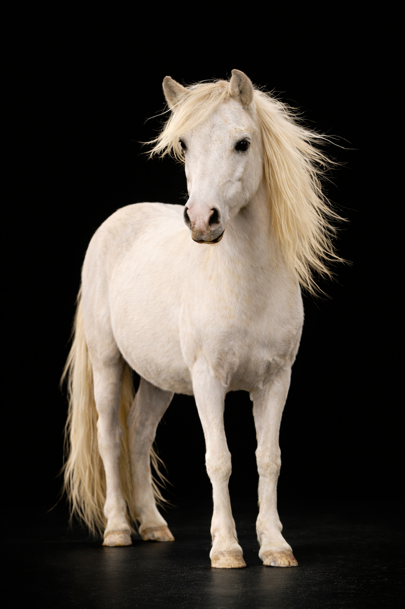
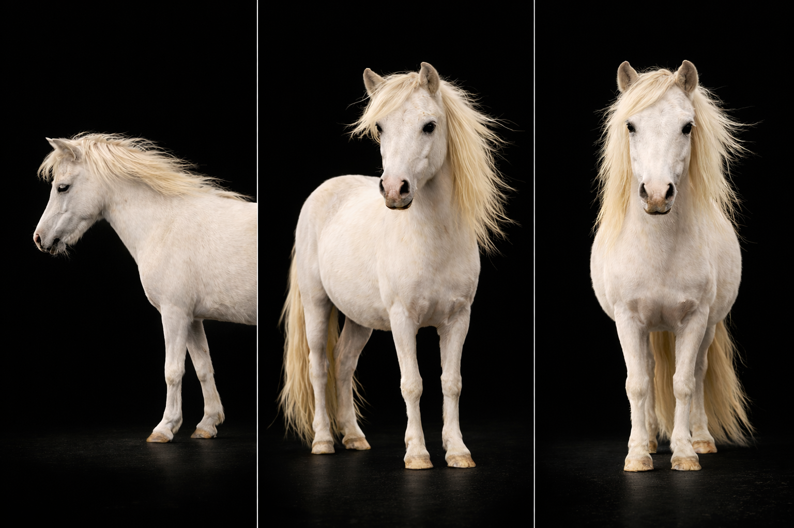
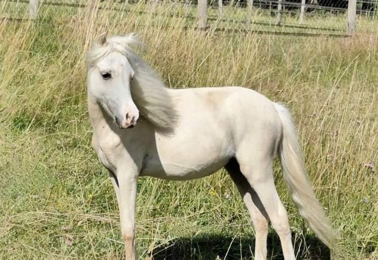
Jument reproductrice · L'Arche du Négadis
Rose est bien plus qu'une jument miniature ; elle est l'expression vivante de la finesse et de la distinction. Sa robe d'un blanc pur met en lumière une silhouette d'une rare élégance.
Dotée d'allures aériennes et d'un port de tête souverain, elle rappelle par son charisme la noblesse des chevaux de race espagnole. Sa lignée, héritée de champions reconnus (registre AMHR), en fait une jument d'exception pour tout programme d'élevage visant l'excellence morphologique.
Le tempérament de Rose est à l'image de son nom : d'une douceur absolue. Elle incarne la philosophie de l'Arche du Négadis par son équilibre mental parfait :
Rose puise sa force dans une génétique éprouvée, garantissant des poulains d'une grande valeur :
Rose, c'est la preuve vivante qu'élégance et douceur peuvent coexister dans un seul et même animal d'exception.
— L'Arche du Négadis, Philosophie d'élevageRose apporte à notre élevage une dimension esthétique et émotionnelle rare.
Une ligne de dessus très élégante et une musculature harmonieuse. Ses membres sont secs et ses aplombs impeccables, offrant une base solide pour la reproduction.
Sa capacité à rester sereine et "froide dans sa tête" tout en dégageant une énergie noble en mouvement fait d'elle une poulinière de premier plan — garantie de poulains magnifiques et d'une stabilité mentale exemplaire.
Sa robe blanche d'une pureté absolue, révélée sur fond noir, est un atout visuel majeur. Cette clarté lumineuse se retrouve dans sa descendance, apportant une valeur esthétique forte aux poulains.
Ses allures typées "Andalou" — rebond, amplitude, fierté innée — sont une caractéristique rare et très prisée en show américain. Une transmission précieuse pour toute progéniture destinée à la compétition.
Photos réalisées sur fond noir pour mettre en valeur la pureté de sa robe blanche et la noblesse de ses allures.
Contactez-nous pour en savoir plus sur Rose, ses accouplements en cours et les poulains nés au domaine.
L'équilibre parfait entre compacité et gentillesse. Découvrez la force tranquille de l'élevage de l'Arche du Négadis.
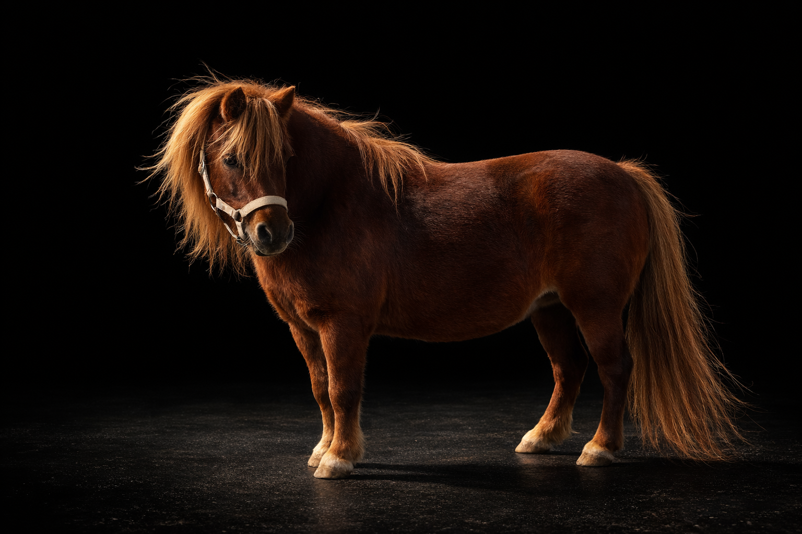
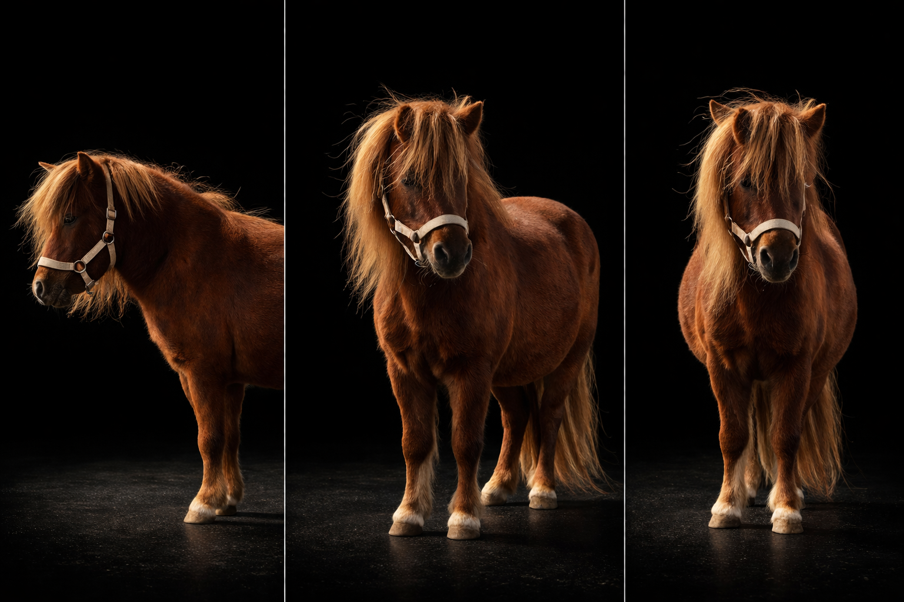
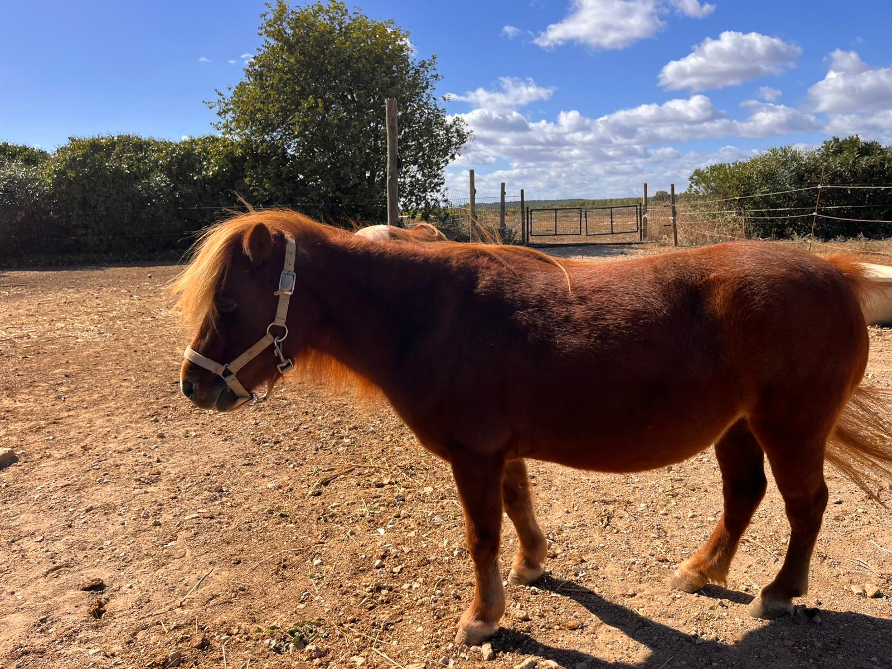
Jument reproductrice · L'Arche du Négadis
Gemme est une jument AMHA qui porte parfaitement son nom : une pierre précieuse de petite taille, mais d'une valeur inestimable pour notre programme d'élevage.
Ce petit modèle compact est l'exemple même de ce que la sélection américaine peut offrir de mieux en termes de stabilité et de morphologie équilibrée. Bien plus qu'une simple reproductrice, Gemme est le pilier serein de notre troupeau.
Le véritable atout de Gemme, celui qui la distingue entre toutes, c'est son caractère. Elle incarne la jument de famille et de confiance par excellence :
La valeur de Gemme se révèle également à travers sa descendance. Elle s'est imposée comme une mère exceptionnelle :
Gemme est la preuve qu'un grand cœur n'a pas besoin d'une grande taille pour laisser une empreinte durable.
— L'Arche du Négadis, Philosophie d'élevagePour un éleveur, une jument comme Gemme est une garantie de pérennité.
Son format très réduit (78 cm) sans aucun compromis sur la solidité de ses membres en fait un modèle rare. Elle possède une morphologie harmonieuse qui convient parfaitement pour produire des sujets très typés.
Gemme est la clé pour fixer la petite taille et le caractère "froid". Dans un élevage de prestige, son tempérament est le socle sur lequel nous construisons la confiance de nos futurs propriétaires de poulains.
Son alezan crins lavés — corps roux cuivré, crinière et queue dorées — est l'une des robes les plus lumineuses et les plus appréciées en show. Une signature esthétique forte qu'elle peut transmettre à ses poulains.
Sa qualité maternelle hors norme et son instinct naturel font de chaque naissance une réussite. Les poulains de Gemme sont équilibrés, confiants et faciles à manipuler dès les premiers jours — un atout décisif pour les futurs propriétaires.
Photos réalisées sur fond noir pour révéler l'éclat de son alezan cuivré et la noblesse de sa silhouette compacte.
Découvrez les poulains nés de Gemme ou contactez-nous pour un projet d'adoption personnalisé.
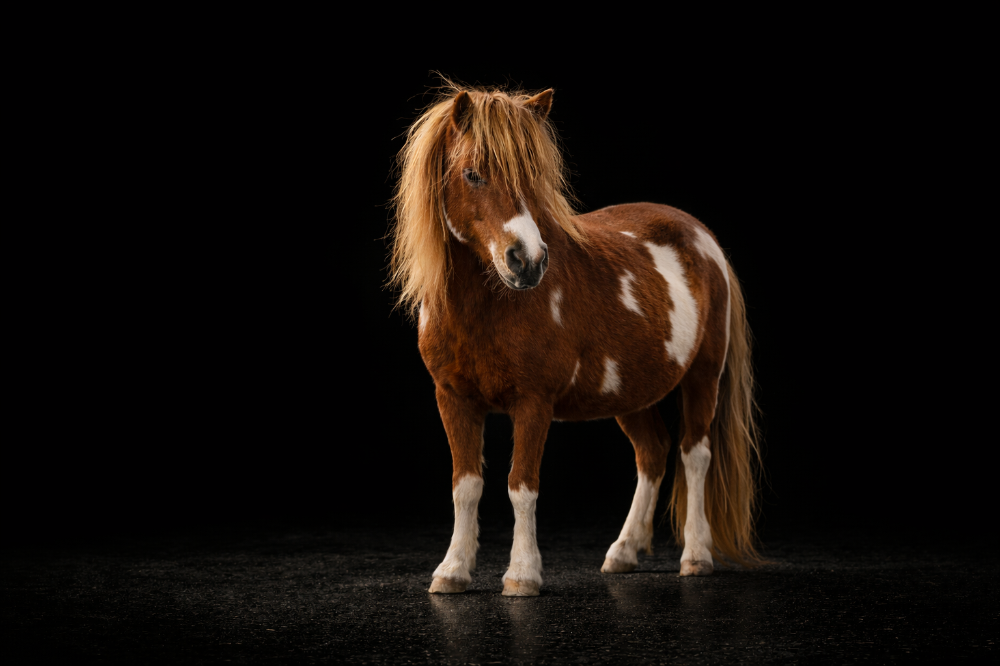
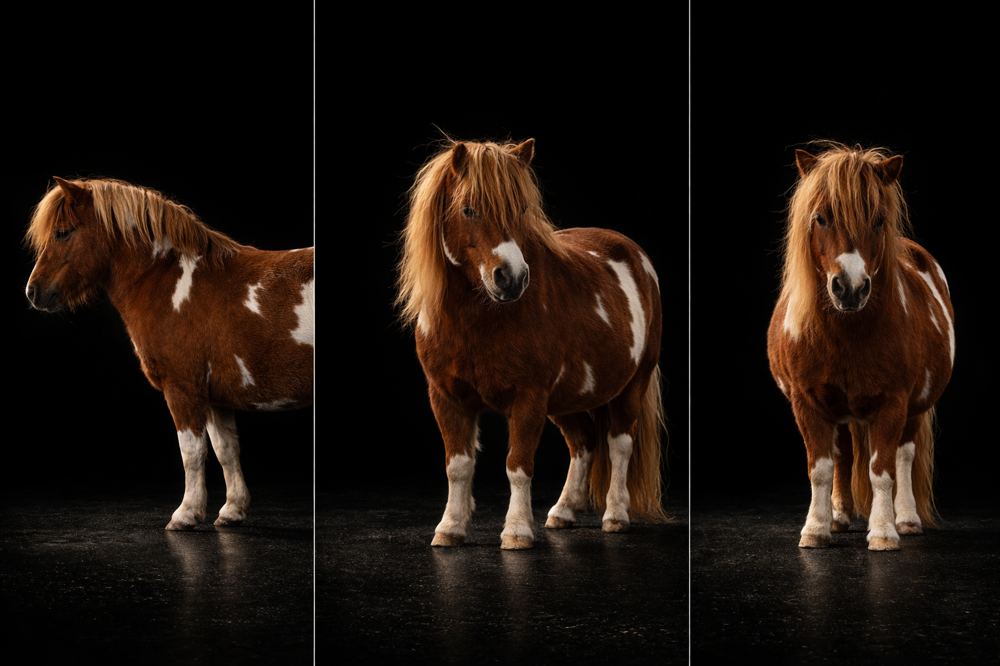
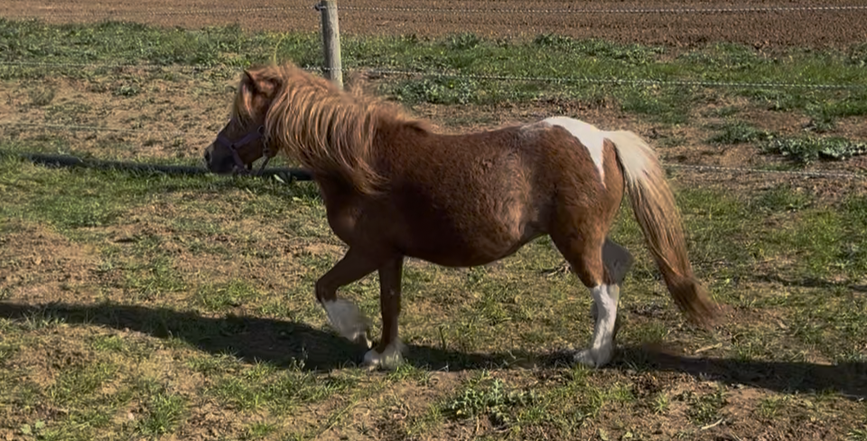
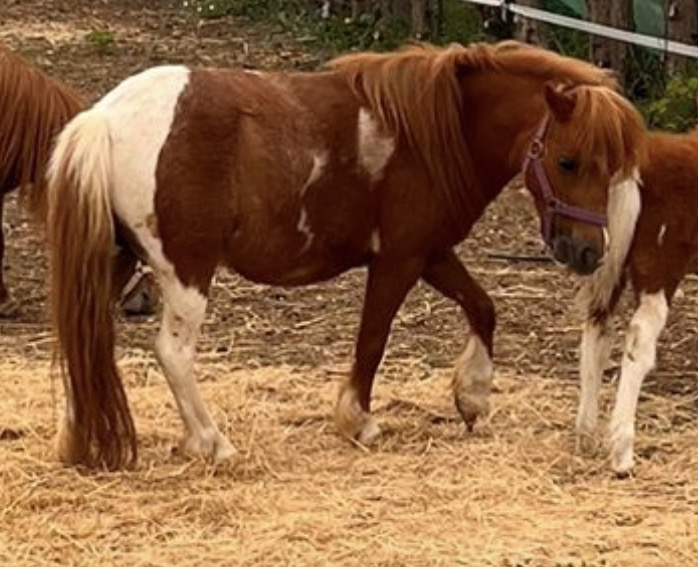
Jument reproductrice · L'Arche du Négadis
Kadence est une jument AMHA qui ne passe jamais inaperçue. Sa robe pie, aux contrastes marqués, souligne une morphologie athlétique et moderne. Bien plus qu'une simple beauté visuelle, Kadence incarne la jument miniature "sport" : une ligne de dos solide, une attache d'encolure élégante et ce charisme naturel qui définit les lignées de show américaines.
Kadence est la preuve qu'un petit caractère peut rimer avec une grande gentillesse. Elle est l'une des juments les plus plaisantes à manipuler au domaine :
L'élégance du Pie combinée à une génétique d'élite.
Kadence est la preuve qu'un fort caractère peut rimer avec une grande gentillesse. Derrière son allure de show-horse réside une jument qui se prête à toutes les situations avec sérénité et bonne volonté.
"Kadence est celle qui vous surprend — on s'attendrait à une jument difficile vu son charisme, et c'est la plus sage du troupeau."
— L'équipe de l'Arche du Négadis
L'un des grands atouts de Kadence réside dans sa manière de se déplacer. Sa locomotion spectaculaire est sa carte maîtresse en tant que reproductrice.
Kadence représente la modernité du cheval miniature américain.
Sa conformation est harmonieuse avec un excellent rapport épaule/croupe. Elle dégage une impression de force et de finesse simultanément — un équilibre rare qui séduit immédiatement les connaisseurs.
Kadence est la jument idéale pour produire des poulains polyvalents, capables de briller aussi bien en présentation qu'en tant que compagnons de vie d'exception.
Sa robe Pie Tobiano aux contrastes saisissants est l'une des plus prisées en compétition. Elle transmet ses gènes de couleur à ses descendants avec une grande régularité, garantissant des poulains au marquage spectaculaire.
Son caractère "bien dans sa tête" est le critère numéro un que nous souhaitons fixer pour ses futurs produits. Un mental équilibré fait toute la différence pour les familles qui accueillent un miniature.
Photos réalisées sur fond noir pour révéler la puissance de ses contrastes Pie et la noblesse de sa silhouette sportive.
Découvrez les poulains nés de Kadence ou contactez-nous pour un projet d'adoption personnalisé.
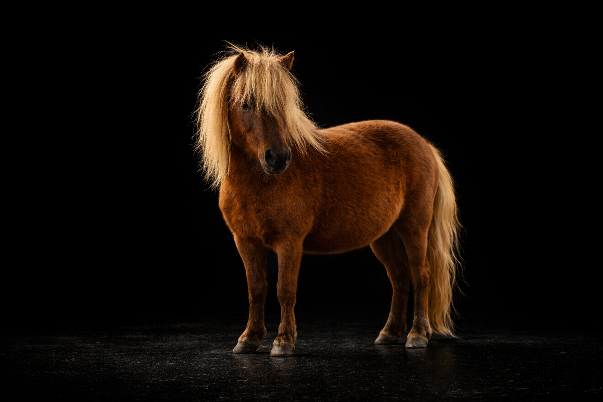
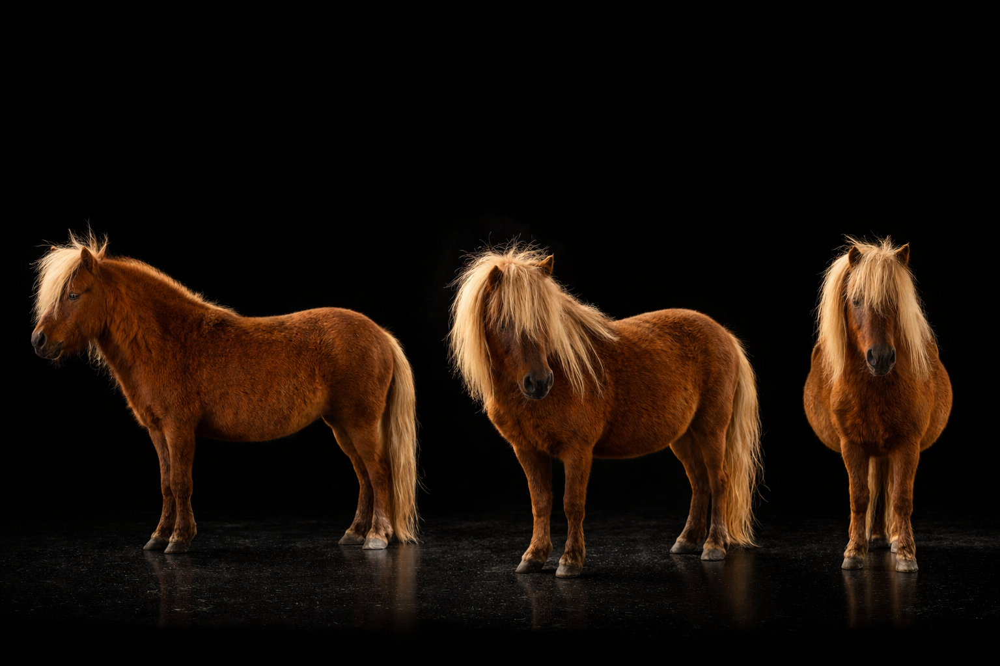
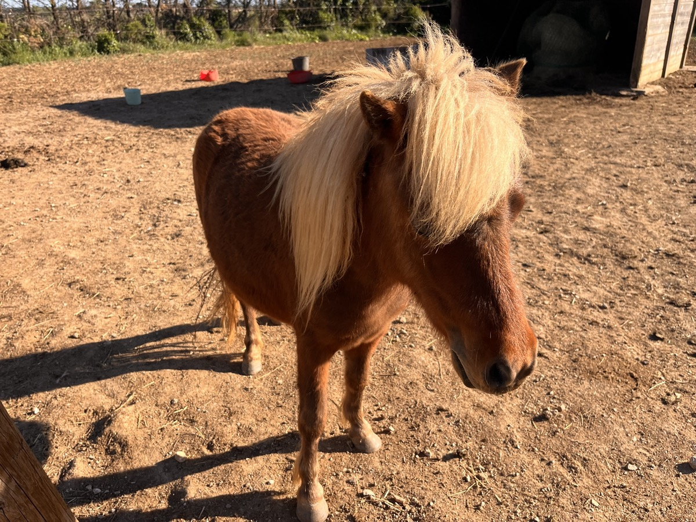
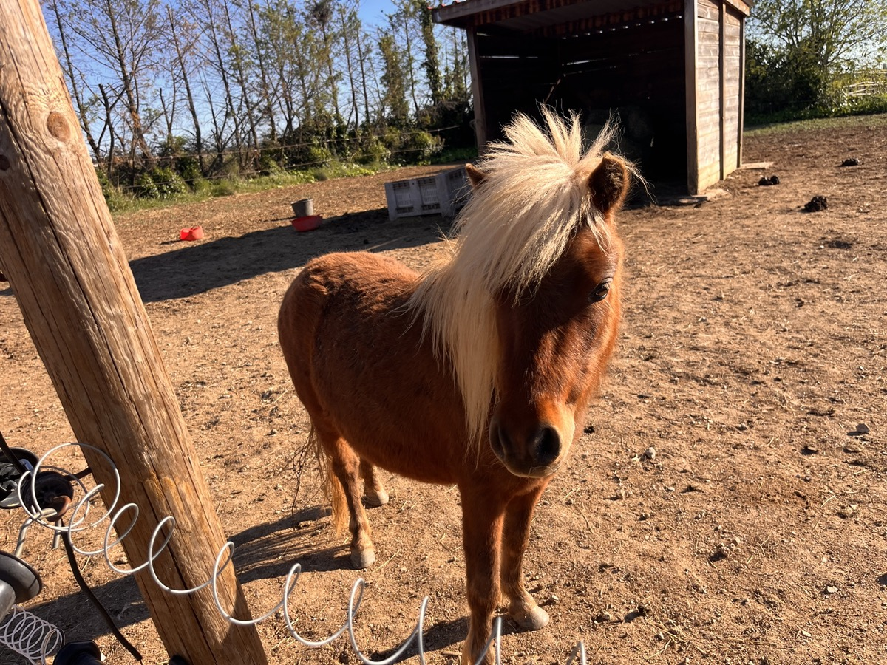
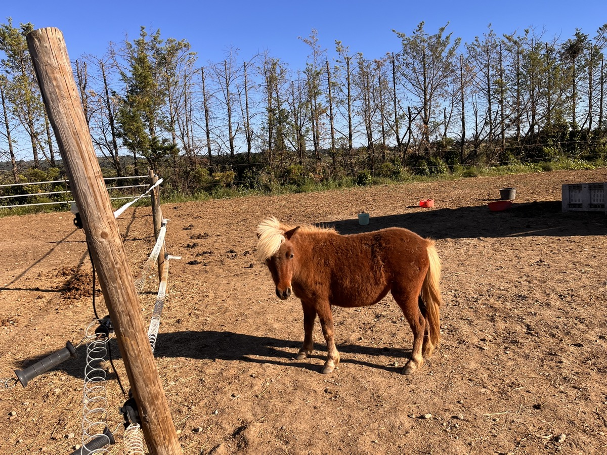
Jument reproductrice · L'Arche du Négadis
Opale est une jument AMHA qui captive immédiatement par son contraste chromatique unique. Ce petit modèle se distingue par sa robe alezane profonde, magnifiée par des crins lavés d'un blond presque blanc. À l'Arche du Négadis, Opale représente l'alliance parfaite entre la rareté esthétique et la conformité aux standards les plus exigeants du cheval miniature américain.
Si sa robe attire l'œil, c'est son tempérament qui conquiert le cœur. Opale est l'une de nos juments les plus apaisantes :
L'élégance de l'Alezan crins lavés dans un format miniature ultra-compact. Une perle rare de notre élevage AMHA.
Opale est la jument qui réunit tout ce que l'on recherche dans un cheval miniature de compagnie ou de show : une beauté saisissante et un caractère en or. Elle illumine le domaine autant par sa robe que par sa présence bienveillante.
"Avec Opale, même les enfants les plus timides osent approcher. Elle sait exactement comment se comporter."
— L'équipe de l'Arche du Négadis
La valeur d'Opale dans notre programme de sélection repose sur ses caractéristiques morphologiques et chromatiques d'exception.
Opale est la preuve que l'on peut cumuler une robe originale et un modèle de concours.
Son format miniature n'altère en rien son équilibre. Elle possède une encolure bien orientée et une croupe puissante, lui permettant de transmettre une belle force à ses produits tout en conservant le type AMHA.
Opale est utilisée pour fixer la petite taille et la couleur. Elle est la mère idéale pour produire des poulains destinés au show ou à la médiation animale, où le tempérament tranquille est une exigence absolue.
L'Alezan crins lavés est l'une des robes les plus photographiées et prisées du monde miniature. Le contraste roux cuivré / crins blond ivoire crée une signature visuelle immédiatement reconnaissable — un atout marketing de premier plan.
Entre son caractère serein et affectueux et sa beauté naturelle, Opale cumule tous les atouts pour séduire aussi bien les éleveurs que les familles en quête d'un compagnon de vie exceptionnel.
Photos réalisées sur fond noir pour sublimer l'éclat de ses crins dorés et la chaleur de sa robe alezane profonde.
Découvrez les poulains nés d'Opale ou contactez-nous pour organiser une visite au domaine.
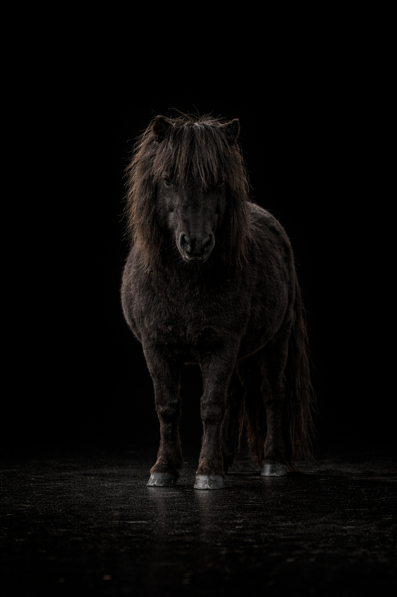
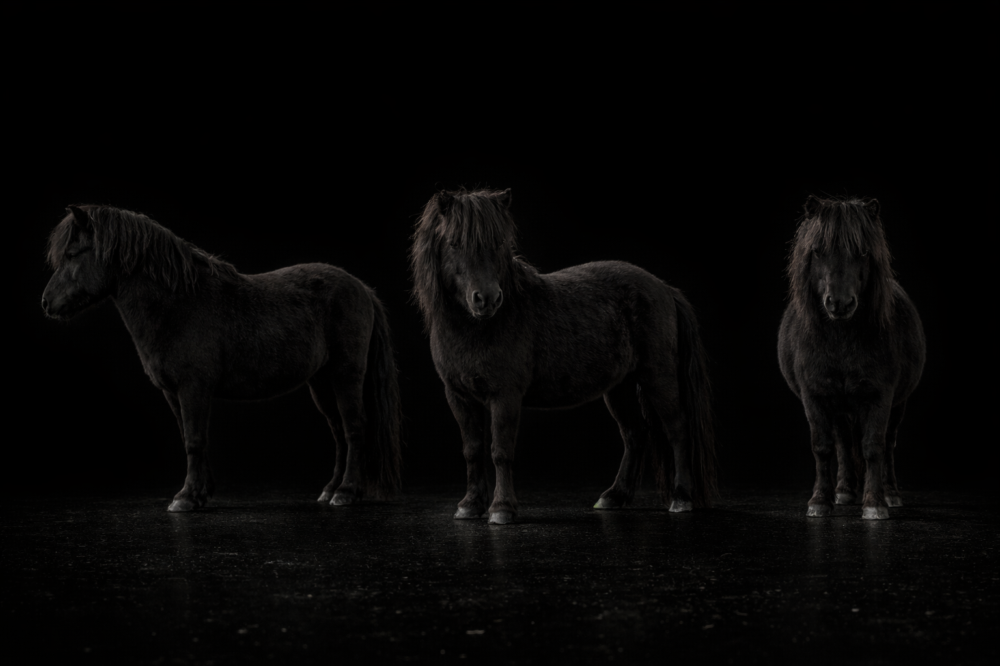
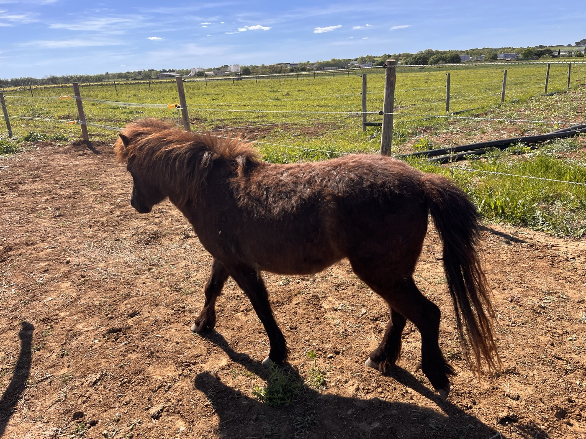
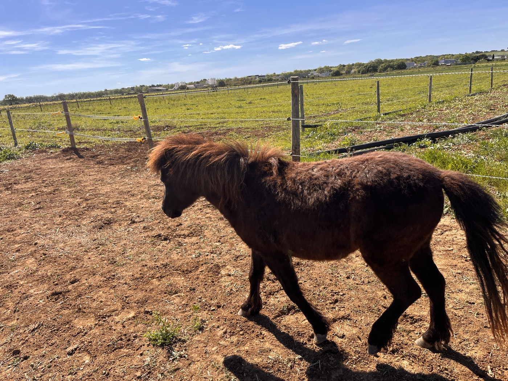
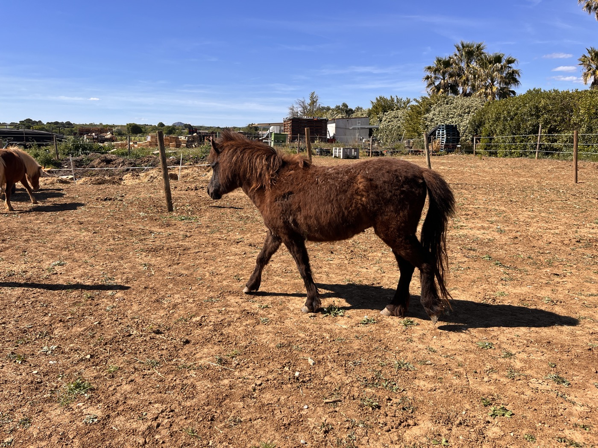
Jument reproductrice · L'Arche du Négadis
Oshi est une jument AMHA qui incarne la grâce absolue. Sa robe "Full Black", profonde et brillante, met en valeur un modèle miniature parfaitement proportionné et compact. Bien plus qu'une jument de prestige, Oshi est une présence magnétique au sein de notre élevage — l'idéal du cheval miniature américain : une esthétique irréprochable combinée à un cœur immense.
Le caractère d'Oshi est ce qui la définit le mieux. Elle possède cette faculté rare de créer un lien instantané et profond avec l'humain :
Le raffinement d'une robe noire intense allié à un tempérament d'une douceur exceptionnelle.
Oshi est la preuve vivante que la sélection AMHA produit des animaux dotés d'une intelligence émotionnelle supérieure. Sa personnalité lumineuse rayonne sur tout le domaine et conquiert instantanément visiteurs et propriétaires.
"Oshi, c'est celle que tout le monde veut adopter après cinq minutes de visite. Elle vous choisit, pas l'inverse."
— L'équipe de l'Arche du Négadis
Au-delà de son tempérament exceptionnel, Oshi possède des atouts morphologiques sérieux pour notre programme de sélection.
Oshi est la preuve vivante que la sélection AMHA produit des animaux dotés d'une intelligence émotionnelle supérieure.
Un dos court et une attache d'encolure haute qui lui donnent beaucoup de chic au pré comme en main. Sa tête expressive et ses membres fins complètent un modèle miniature parfaitement typé.
Oshi est destinée à produire des poulains qui héritent de son "instinct social". Elle garantit que la beauté du cheval miniature s'accompagne toujours d'un tempérament stable et d'une affection sincère pour l'homme.
Son noir intégral sans la moindre marque blanche est une rareté absolue en miniature. Cette pureté chromatique est un atout show de premier plan et une signature génétique très prisée des éleveurs les plus exigeants.
Oshi représente l'âme de l'Arche du Négadis. Elle est la première rencontre que nous proposons aux visiteurs — parce qu'elle incarne mieux que quiconque ce que nous cherchons à produire : un cheval beau, sain, et profondément lié à l'homme.
Photos réalisées sur fond noir pour sublimer la profondeur de sa robe noire intégrale et la noblesse de sa silhouette compacte.
Venez rencontrer Oshi au domaine ou suivez ses prochaines naissances — ses poulains héritent de sa robe noire et de son tempérament d'exception.
Consultez nos poulains disponibles ou contactez-nous pour en savoir plus sur notre programme d'élevage et nos prochaines naissances.
Tout ce que vous souhaitez savoir sur nos reproductrices, notre programme de sélection et le suivi de nos juments gestantes.
Toutes nos juments — qu'il s'agisse de petits modèles "Full Black" comme Oshi ou de lignées de show comme Ninadja ou Rose — sont sélectionnées sur trois piliers fondamentaux :
La maturité physique est primordiale. Selon les recommandations de l'AMHA et pour préserver la santé de la jument, nous ne mettons jamais nos femelles à la reproduction avant l'âge de 3 ou 4 ans. Cela permet une croissance osseuse complète et une mise-bas plus sûre, dans le respect du bien-être animal.
La santé de la future descendance commence par la mère. Toutes nos juments sont testées pour les variants du gène ACAN. En tant qu'élevage d'excellence, nous garantissons que nos juments sont N/N (négatives), éliminant ainsi tout risque de transmission de nanisme pathologique à leurs poulains. C'est un engagement non négociable à l'Arche du Négadis.
Oui. Une jument miniature gestante nécessite un suivi métabolique strict. Bien que leurs besoins augmentent en fin de gestation, il faut éviter le surpoids qui augmente les risques de fourbure ou de dystocie (difficulté à la mise-bas). Nous utilisons des rations équilibrées et spécifiques pour les "Easy Keepers", adaptées à chaque stade de la gestation.
C'est une caractéristique propre à notre sélection. Nos juments développent un lien fusionnel avec l'humain. Une jument "adorable et touchante" n'est pas seulement un plaisir au quotidien : c'est aussi la garantie d'un poulain bien dans sa tête, car le tempérament de la mère influence directement l'éducation et la sociabilité du petit dès ses premiers jours. Des juments comme Oshi ou Opale en sont l'expression la plus pure.
Il arrive que nous proposions des juments miniatures confirmées pleines de notre étalon Macchiato. Cela permet à l'acquéreur de démarrer un projet d'élevage avec une génétique sécurisée et un futur poulain déjà inscrit aux registres américains (AMHA/AMHR) et au SIRE. Contactez-nous pour connaître les disponibilités.